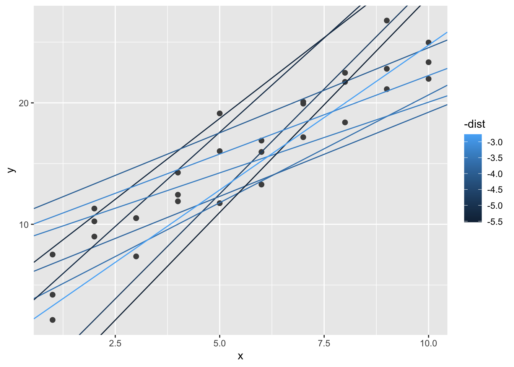
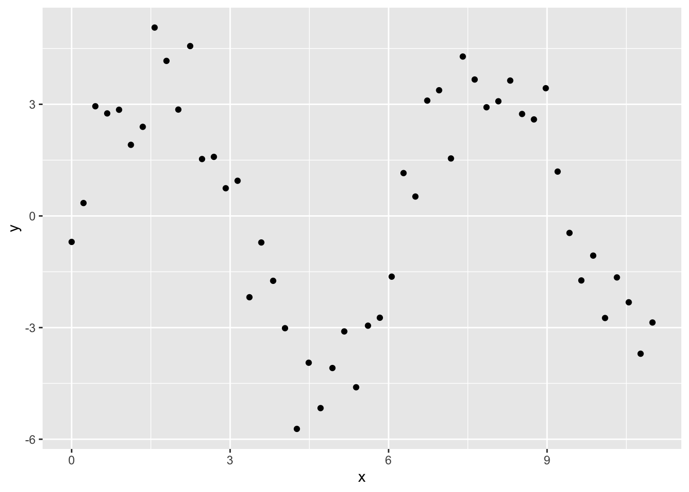

modelr——基础模型实现
王诗翔 · 2018-10-05
建立模型的目的是提供一个简单的、低纬度的数据集摘要。我们使用模型的目的是将数据划分为模式和残差，借助模型探索数据集，拨开覆盖在数据集结构上的神秘面纱。
建模的过程可以分为2个阶段：
- 首先，我们需要定义一个模型族来表示一种精确但一般性的模式，这种模式是我们想要捕获的。模式可以是一条直线或一条二次曲线。
- 接下来我们要生成一个拟合模型，方法是从模型族中找出最接近数据的一个模型。该阶段使得一般的模型族具体化为特定模型。
准备工作
这里我们使用modelr将R基础包中的建模函数进行包装，使其支持管道操作。
library(tidyverse)
#> -- Attaching packages ------------------------------------------------------------ tidyverse 1.3.0 --
#> v ggplot2 3.3.2 v purrr 0.3.4
#> v tibble 3.0.3 v dplyr 1.0.0
#> v tidyr 1.1.0 v stringr 1.4.0
#> v readr 1.3.1 v forcats 0.5.0
#> -- Conflicts --------------------------------------------------------------- tidyverse_conflicts() --
#> x dplyr::filter() masks stats::filter()
#> x dplyr::lag() masks stats::lag()
library(modelr)
options(na.action = na.warn)一个简单Model
我们研究一个模拟数据集sim1，它包含两个连续型变量x和y。我们先用点图绘制出二者的关系：
ggplot(sim1, aes(x, y)) +
geom_point()我们可以看到数据存在一种很强的正相关模式，接下来我们使用模型捕获它，并将其表示出来。在上图中我们可以确定模型的基本形式——线性的，下面我们随机生成一些线性模型，将其覆盖到数据上，以此感受模型族的模型形式。
models = tibble(
a1 = runif(250, -20, 40),
a2 = runif(250, -5, 5)
)
ggplot(sim1, aes(x, y)) +
geom_abline(
aes(intercept = a1, slope = a2),
data = models, alpha = 1/4
) +
geom_point()这张图有250个模型，很多都非常糟糕。良好的模型应该与数据非常接近，因而我们需要一种方法来量化数据与模型之间的距离，寻找使得模型与数据距离最近的参数，拟合最优模型。
其中一个简单的方法是找出每个数据点与模型之间的垂直距离，这个距离是由模型计算出的y值与数据点实际y值之间的差。
为了计算该距离，我们首先将模型族转换为一个R函数，该函数将模型参数和数据作为输入，并将模型预测值作为输出：
model1 = function(a, data) {
a[1] + data$x * a[2]
}
model1(c(7, 1.5), sim1)
#> [1] 8.5 8.5 8.5 10.0 10.0 10.0 11.5 11.5 11.5 13.0 13.0 13.0 14.5 14.5 14.5
#> [16] 16.0 16.0 16.0 17.5 17.5 17.5 19.0 19.0 19.0 20.5 20.5 20.5 22.0 22.0 22.0接下来我们需要某种方法计算预测值与实际值之间的总体距离，也就是将上面30个距离值转换为一个总体的距离。
统计学上一种常见的方法为“均方根误差”，先计算实际值与预测值之间的差，求平方，然后求取平均数，最后计算平方根。
measure_distance = function(mod, data){
diff = data$y - model1(mod, data)
sqrt(mean(diff ^2))
}
measure_distance(c(7,1.5), sim1)
#> [1] 2.67现在可以使用purrr计算前面定义的所有模型和数据间的距离了。这里我们需要一个辅助函数，因为距离函数希望模型是一个长度为2的数值向量。
sim1_dist = function(a1, a2) {
measure_distance(c(a1, a2), sim1)
}
models = models %>%
mutate(dist = purrr::map2_dbl(a1, a2, sim1_dist))
models
#> # A tibble: 250 x 3
#> a1 a2 dist
#> <dbl> <dbl> <dbl>
#> 1 26.7 3.55 31.1
#> 2 -7.60 2.19 11.2
#> 3 13.7 1.72 8.00
#> 4 -1.99 1.25 11.1
#> 5 35.2 4.70 46.3
#> 6 15.1 0.0486 6.14
#> 7 -7.92 1.99 12.7
#> 8 38.3 1.28 30.0
#> 9 24.3 1.90 19.4
#> 10 25.3 1.43 17.9
#> # ... with 240 more rows下一步我们将最好的10个模型覆盖到数据上，使用-dist为模型着色，这样我们可以看出最佳模型具有最明亮的颜色：
ggplot(sim1, aes(x, y)) +
geom_point(size = 2, color = "grey30") +
geom_abline(
aes(intercept = a1, slope = a2, color = -dist),
data = filter(models, rank(dist) <= 10)
)
我们还可以将这些模型作为观测，使用由a1和a2组成的一张散点图来表示它们，还是使用-dist着色。我们高亮前10个最佳模型，在其下面画出红色圆圈：
ggplot(models, aes(a1, a2)) +
geom_point(
data = filter(models, rank(dist) <= 10),
size = 4, color = "red"
) +
geom_point(aes(color = -dist))相比于检查多个随机模型，我们使用一种更加系统化的方法——网格搜索法来找出模型参数。首先我们生成一张分布均匀的数据点网格，然后将这个网格与前面图中的10个最佳模型绘制在一张图中，凭借最佳模型在网格中的位置就可以找出模型参数的粗略值。
grid = expand.grid(
a1 = seq(-5, 20, length = 25),
a2 = seq(1, 3, length = 25)
) %>%
mutate(dist = purrr::map2_dbl(a1, a2, sim1_dist))
grid %>%
ggplot(aes(a1, a2)) +
geom_point(
data = filter(grid, rank(dist) <= 10),
size = 4, color = "red"
) +
geom_point(aes(color = -dist))如果将这10个模型重新覆盖到原始数据上，可以看出效果还是不错的。
ggplot(sim1, aes(x, y)) +
geom_point(size = 2, color = "grey30") +
geom_abline(
aes(intercept = a1, slope = a2, color = -dist),
data = filter(grid, rank(dist) <= 10)
)我们可以设想不断细化网格来最终找出最佳模型。但还有个更好的办法解决这个问题，名为“牛顿——拉夫逊搜索”的数值最小化工具（牛顿下坡法）。该方法的直观解释很简单：先选择一个起点，环顾四周找到最陡的斜坡，并沿着这个斜坡向下滑行一小段，然后重复该过程，直到不能下滑为止。在R中，optim()函数可以完成该任务：
best = optim(c(0,0), measure_distance, data = sim1)
best$par
#> [1] 4.22 2.05ggplot(sim1, aes(x, y)) +
geom_point(size = 2, color = "grey30") +
geom_abline(intercept = best$par[1], slop = best$par[2])
#> Warning: Ignoring unknown parameters: slop对于这个模型，我们还可以使用另一种方法，它是一个更广泛模型族的特殊情况，即线性模型。
R有专门用于拟合线性模型的工具，叫lm()函数，它用公式来表示模型族。
sim1_mod = lm(y ~ x, data = sim1)
coef(sim1_mod)
#> (Intercept) x
#> 4.22 2.05这和使用optim()结果完全一致，注意lm()函数使用的不是optim()，而是利用了线性模型的数学结构，实际上利用了一种非常复杂的算法，通过几何学、微积分和线性代数间的一些关系，只需要一个步骤就可以找出最近似的模型。这种方法速度非常快，而且一定能找到全局最小值。
模型可视化
找出模型未捕获的信息也是非常有用的，即所谓的残差，它是数据去除预测值后剩余的部分，残差是非常强大的，它允许我们使用模型去除数据中显著的模式，以便对剩余的微妙趋势进行研究。
要想对模型的预测进行可视化表示，首先要生成一个分布均匀的数值网格，以便覆盖数据所在区域。最简单的方式是使用modelr::data_grid()函数，第一个参数是一个数据框，它对随后的参数都会找出其中的唯一值，然后生成所有组合：
grid = sim1 %>%
data_grid(x)
grid
#> # A tibble: 10 x 1
#> x
#> <int>
#> 1 1
#> 2 2
#> 3 3
#> 4 4
#> 5 5
#> 6 6
#> 7 7
#> 8 8
#> 9 9
#> 10 10接着我们添加预测值，使用modelr::add_predictions()函数，其参数是一个数据框和一个模型。
grid = grid %>%
add_predictions(sim1_mod)
grid
#> # A tibble: 10 x 2
#> x pred
#> <int> <dbl>
#> 1 1 6.27
#> 2 2 8.32
#> 3 3 10.4
#> 4 4 12.4
#> 5 5 14.5
#> 6 6 16.5
#> 7 7 18.6
#> 8 8 20.6
#> 9 9 22.7
#> 10 10 24.7下一步是绘制预测值，用的是通用模型画法，而不是只考虑线性模型：
ggplot(sim1, aes(x)) +
geom_point(aes(y = y)) +
geom_line(
aes(y = pred),
data = grid,
color = "red",
size = 1
)残差
与预测值相对的是残差，预测值可以告诉我们模型捕获的模式，而残差则表示模型漏掉的部分。残差就是我们前面计算过的观测值与预测值间的距离。
我们使用add_residuals()将残差添加到数据中，注意我们使用的是原始数据，因为计算残差需要使用实际的y值：
sim1 = sim1 %>%
add_residuals(sim1_mod)
sim1
#> # A tibble: 30 x 3
#> x y resid
#> <int> <dbl> <dbl>
#> 1 1 4.20 -2.07
#> 2 1 7.51 1.24
#> 3 1 2.13 -4.15
#> 4 2 8.99 0.665
#> 5 2 10.2 1.92
#> 6 2 11.3 2.97
#> 7 3 7.36 -3.02
#> 8 3 10.5 0.130
#> 9 3 10.5 0.136
#> 10 4 12.4 0.00763
#> # ... with 20 more rows对于残差可以反映出模型的哪些信息，有几种不同的理解方法。其中一种方法是简单地描绘频率多边形图，以帮助我们理解残差的分布：
ggplot(sim1, aes(resid)) +
geom_freqpoly(binwidth = 0.5)这种方法可以反映出模型的质量：模型预测值与实际值的差别有多大？注意残差的平均值总为0。
我们经常会使用残差代替原来的预测变量来重新绘图：
ggplot(sim1, aes(x, resid)) +
geom_ref_line(h = 0) +
geom_point()由上图可知，残差应该是随机噪声，这说明我们的模型非常好地捕获了数据集中的模式。
公式与模型族
在R中，公式是表示“特殊行为”的一种通用方式，公式不对变量立刻进行求值，只是将变量表示为函数能够理解的形式。
R中绝大多数建模函数都使用一种标准将公式转换为表示模型族的方程。我们已经见过最简单的转换，即y~x转换为y = a1 + a2*x。如果想看R到底进行了什么转换，可以使用model_matrix()函数，它接受一个数据框和一个公式，并返回一个定义了模型方程的tibble，其中每一列都关联到方程的一个系数，方程的形式总是类似y = a1 * out1 + a2 * out2。对于最简单的情况y ~ x1，函数会返回下面有意思的结果：
df = tribble(
~y, ~x1, ~x2,
4, 2, 5,
5, 1, 6
)
model_matrix(df, y ~ x1)
#> # A tibble: 2 x 2
#> `(Intercept)` x1
#> <dbl> <dbl>
#> 1 1 2
#> 2 1 1R向模型加入截距项的方法是，加入一个值全为1的列，默认R会进行。如果不想要截距项，我们必须使用-明确丢弃它：
model_matrix(df, y ~ x1 - 1)
#> # A tibble: 2 x 1
#> x1
#> <dbl>
#> 1 2
#> 2 1如果向模型中添加更多变量，那么模型矩阵随之增长：
model_matrix(df, y ~ x1 + x2)
#> # A tibble: 2 x 3
#> `(Intercept)` x1 x2
#> <dbl> <dbl> <dbl>
#> 1 1 2 5
#> 2 1 1 6这种公式表示方法称为“Wilkinson-Rogers”表示法。
下面我们利用它表示分类变量、交互项以及变量转换。
分类变量
如果预测变量是连续的，那么从公式转换为方程式很简单；但当预测变量是分类变量时，事情就变得复杂。例如存在公式y ~ sex，R的做法是将其转换为y = x_0 + x_1 * sex_male，如果sex是男性，那么sex_male值为1，否则其值就是0。
df = tribble(
~ sex, ~ response,
"male", 1,
"female", 2,
"male", 1
)
model_matrix(df, response ~ sex)
#> # A tibble: 3 x 2
#> `(Intercept)` sexmale
#> <dbl> <dbl>
#> 1 1 1
#> 2 1 0
#> 3 1 1这里基于构建的是sexmale列，而不是sexfemale列。
如果我们关注预测值的可视化，那么无须担心具体的参数值。下面使用sim2数据集进行说明：
ggplot(sim2) +
geom_point(aes(x, y))我们可以拟合一个模型，并生成预测：
mod2 = lm(y ~ x, data = sim2)
grid = sim2 %>%
data_grid(x) %>%
add_predictions(mod2)
grid
#> # A tibble: 4 x 2
#> x pred
#> <chr> <dbl>
#> 1 a 1.15
#> 2 b 8.12
#> 3 c 6.13
#> 4 d 1.91实际上，带有分类变量x的模型会为每个分类预测出均值，这是因为均值会使得均方误差距离最小化。我们可以通过将预测值覆盖到原始数据上进行观察：
ggplot(sim2, aes(x)) +
geom_point(aes(y = y)) +
geom_point(
data = grid,
aes(y = pred, color = "red", size = 4)
)交互项 （连续变量与分类变量）
sim3数据集包含了一个分类预测变量和一个连续预测变量，我们先简单展示查看该数据：
ggplot(sim3, aes(x1, y)) +
geom_point(aes(color = x2))我们可以使用两种模型进行拟合：
mod1 = lm(y ~ x1 + x2, data = sim3)
mod2 = lm(y ~ x1 * x2, data = sim3)要想对模型可视化，需要两种新技巧：
- 因为有两个预测变量，所以我们需要将它们都传给
data_grid()，它会找出唯一值并进行组合 - 要想为以上两个模型同时生成预测，可以使用
gather_predictions()函数，它可以将每个预测作为一行加入数据框，互补函数spread_predictions()可以将每个预测作为1列加入数据框。
grid = sim3 %>%
data_grid(x1, x2) %>%
gather_predictions(mod1, mod2)
grid
#> # A tibble: 80 x 4
#> model x1 x2 pred
#> <chr> <int> <fct> <dbl>
#> 1 mod1 1 a 1.67
#> 2 mod1 1 b 4.56
#> 3 mod1 1 c 6.48
#> 4 mod1 1 d 4.03
#> 5 mod1 2 a 1.48
#> 6 mod1 2 b 4.37
#> 7 mod1 2 c 6.28
#> 8 mod1 2 d 3.84
#> 9 mod1 3 a 1.28
#> 10 mod1 3 b 4.17
#> # ... with 70 more rows下面进行可视化：
ggplot(sim3, aes(x1, y, color = x2)) +
geom_point() +
geom_line(data = grid, aes(y = pred)) +
facet_wrap( ~ model)哪种模型更好呢？我们可以检查一个残差，利用模型和x2变量进行分面，因为这样可以看到每个组的模式：
sim3 = sim3 %>%
gather_residuals(mod1, mod2)
ggplot(sim3, aes(x1, resid, color = x2)) +
geom_point() +
facet_wrap(model ~ x2)mod2的残差几乎看不到明显的模式，而mod1的残差则表明这个模式在b分类中明显漏掉了，在其他分类虽然不明显，但似乎也存在某种模式。
交互项 （两个连续变量）
下面模型和上一节基本相同，只不过这里是两个连续变量。前几个步骤和前面一样：
mod1 = lm(y ~ x1 + x2, data = sim4)
mod2 = lm(y ~ x1 + x2, data = sim4)
grid = sim4 %>%
data_grid(
x1 = seq_range(x1, 5),
x2 = seq_range(x2, 5)
) %>%
gather_predictions(mod1, mod2)这里data_grid()使用了seq_range()函数，我们不使用x变量的所有唯一值，而是使用x变量最小值和最大值之间间隔相等的5个值来生成网格。seq_range()还有其他有用的参数：
pretty = TRUE会生成一个漂亮的序列，让我们看起来比较舒服。
seq_range(c(0.0123, 0.923423), n = 5)
#> [1] 0.0123 0.2401 0.4679 0.6956 0.9234
seq_range(c(0.0123, 0.923423), n = 5, pretty = TRUE)
#> [1] 0.0 0.2 0.4 0.6 0.8 1.0trim = 0.1会截断10%的尾部值。如果变量具有长尾分布，而我们希望尽量生成中心附近的值，那么可以使用该参数。
x1 = rcauchy(100)
seq_range(x1, n = 5)
#> [1] -22.1 240.6 503.3 766.0 1028.7
seq_range(x1, n = 5, trim = 0.10)
#> [1] -4.357 -0.537 3.284 7.104 10.925
seq_range(x1, n = 5, trim = 0.25)
#> [1] -1.6029 -0.0942 1.4145 2.9232 4.4319
seq_range(x1, n = 5, trim = 0.50)
#> [1] -0.686 -0.158 0.370 0.898 1.426expand = 0.1从某种程度上说是trim的反操作，它可以将取值范围扩大10%。
x2 = c(0, 1)
seq_range(x2, n = 5)
#> [1] 0.00 0.25 0.50 0.75 1.00
seq_range(x2, n = 5, expand = 0.10)
#> [1] -0.050 0.225 0.500 0.775 1.050
seq_range(x2, n = 5, expand = 0.25)
#> [1] -0.125 0.188 0.500 0.812 1.125
seq_range(x2, n = 5, expand = 0.50)
#> [1] -0.250 0.125 0.500 0.875 1.250接下来我们队模型进行可视化，因为有2个连续变量，所以我们可以将模型想象为3维表面，使用geom_tile()函数显示：
ggplot(grid, aes(x1, x2)) +
geom_tile(aes(fill = pred)) +
facet_wrap(~ model)直接看颜色我们看不出有什么差别，我们的眼睛和大脑不擅长精确分辨颜色的深浅。我们尝试转换角度，从x1和x2的角度来看：
ggplot(grid, aes(x1, pred, color = x2, group = x2)) +
geom_line() +
facet_wrap(~ model)ggplot(grid, aes(x2, pred, color = x1, group = x1)) +
geom_line() +
facet_wrap(~ model)这说明两个连续变量的交互项的作用方式与一个分类变量和一个连续变量的交互项基本相同，交互项说明了两个变量是相互影响的，如果要预测y值，我们必须同时考虑x1值和x2的值。
变量转换
我们还可以在模型公式中进行变量转换。例如log(y) ~ sqrt(x1) + x2可以转换为log(y) = a1 + a2 * sqrt(x1) + a3 * x2。如果想要使用+、*、^或-进行变量转换，那么要使用I()进行包装，以便R处理时不将它看做模型定义的部分。
如果搞不懂模型在做神马，使用model_matrix()函数查看lm()到底在拟合哪个方程：
df = tribble(
~y, ~x,
1, 1,
2, 2,
3, 3
)
model_matrix(df, y ~ x^2 + x)
#> # A tibble: 3 x 2
#> `(Intercept)` x
#> <dbl> <dbl>
#> 1 1 1
#> 2 1 2
#> 3 1 3
model_matrix(df, y ~ I(x^2) + x)
#> # A tibble: 3 x 3
#> `(Intercept)` `I(x^2)` x
#> <dbl> <dbl> <dbl>
#> 1 1 1 1
#> 2 1 4 2
#> 3 1 9 3变量转换非常有用，我们可以使用它们来近似非线性函数。如果学过微积分，我们就知道泰勒定理，它表示任何平滑函数都可以近似为无限多个多项式之和。即可以使用线性函数任意逼近一个平滑函数，但手动输入这个方程太无聊了，R提供了一个辅助函数poly()。
model_matrix(df, y ~ poly(x, 2))
#> # A tibble: 3 x 3
#> `(Intercept)` `poly(x, 2)1` `poly(x, 2)2`
#> <dbl> <dbl> <dbl>
#> 1 1 -7.07e- 1 0.408
#> 2 1 -7.85e-17 -0.816
#> 3 1 7.07e- 1 0.408但使用poly()函数有一个很大的问题：多项式的值会超出数据范围，很容易接近正无穷或负无穷。更安全的方式是使用自然样条法splines::ns()：
library(splines)
model_matrix(df, y ~ ns(x, 2))
#> # A tibble: 3 x 3
#> `(Intercept)` `ns(x, 2)1` `ns(x, 2)2`
#> <dbl> <dbl> <dbl>
#> 1 1 0 0
#> 2 1 0.566 -0.211
#> 3 1 0.344 0.771下面看一下近似非线性函数时的情况：
sim5 = tibble(
x = seq(0, 3.5 * pi, length = 50),
y = 4 * sin(x) + rnorm(length(x))
)
ggplot(sim5, aes(x, y)) +
geom_point()
我们使用这个数据拟合5个模型：
mod1 = lm(y ~ ns(x, 1), data = sim5)
mod2 = lm(y ~ ns(x, 2), data = sim5)
mod3 = lm(y ~ ns(x, 3), data = sim5)
mod4 = lm(y ~ ns(x, 4), data = sim5)
mod5 = lm(y ~ ns(x, 5), data = sim5)grid = sim5 %>%
data_grid(x = seq_range(x, n = 50, expand = 0.1)) %>%
gather_predictions(mod1, mod2, mod3, mod4, mod5, .pred = "y")
ggplot(sim5, aes(x, y)) +
geom_point() +
geom_line(data = grid, color = "red") +
facet_grid(~ model)缺失值
缺失值不能传达任何变量间的关系，因此建模函数会丢弃包含缺失值的所有行。默认R会不声不响将它们扔掉，但使用options(na.action = na.warn)会确保我们收到一条警告信息：
df = tribble(
~x, ~y,
1, 2.2,
2, NA,
3, 3.5,
4, 8.3,
NA, 10
)
mod = lm(y ~ x, data = df)
#> Warning: Dropping 2 rows with missing values如果想阻止错误信息，可以设定na.action = na.exclude：
mod = lm(y ~ x, data = df, na.action = na.exclude)使用nobs()，我们可以知道模型实际使用了多少个观测：
nobs(mod)
#> [1] 3其他模型族
上面的学习都是基于线性模型，其实还有很多模型，下面列出名称及其R实现：
- 广义线性模型，如
stats::glm()函数 - 广义可加模型，如
mgcv::gam()函数 - 带有惩罚项的线性模型，如
glmnet::glmnet()函数 - 健壮线性模型，如
MASS:rlm() - 树模型，如
rpart::rpart()。本身效率不高，但如果使用随机森林randomForest::randomForest()或梯度提升机xgboost::xgboost()这样的模型将非常强大。
来源：《R for Data Science》